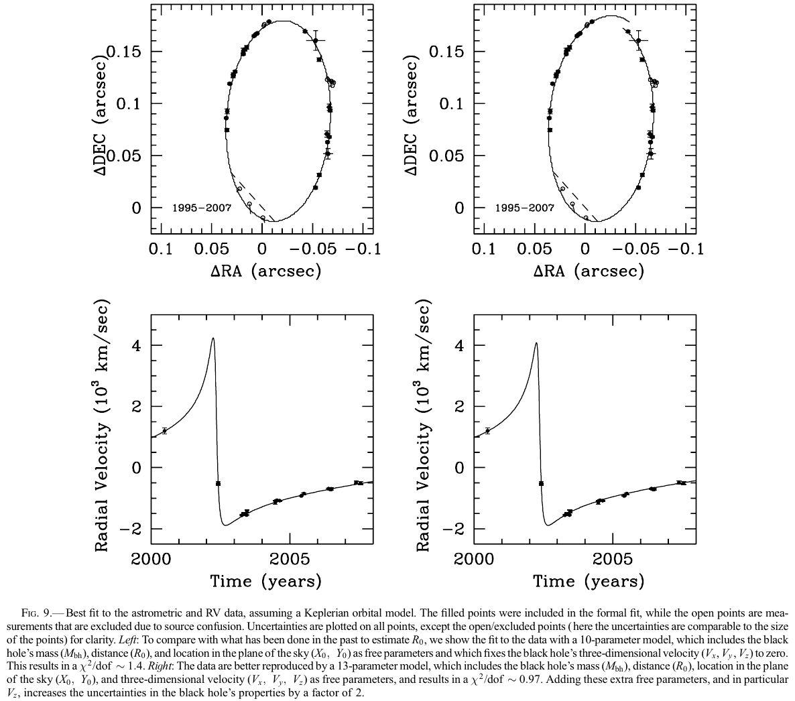

È impossibile osservare il CG (R <
500\,\text{pc}) nel visibile, a causa dell’estinzione della
polvere. Le bande più usate sono due:
Nel radio è visibile l’emissione continua di gas (HII) e
l’emissione di righe da nubi molecolari e molecole interstellari;
Nell’infrarosso è visibile la polvere (continuo) e gas
neutri e ionizzati (righe).
A causa della distanza (8 kpc), le osservazioni sono generalmente
di limitata risoluzione: ad es. Spitzer risolve solo strutture più
grandi di 0.1 pc.
Immagine multibanda del CG
Dimensioni: 32’×16’. Giallo: near-IR (Hubble), rosso: IR (Spitzer),
blu: X (Chandra).
Il Centro Galattico nel Radio
Il buco nero centrale
Nel 2022 le osservazioni dell’Event Horizon Telescope
(EHT) hanno dimostrato che al centro della nostra Galassia si trova un
buco nero di \sim10^6 M_\odot, Sgr A*
(a volte denominato CBH, Central Black Hole).
L’esistenza dei buchi neri supermassivi è stata osservata prima
di essere predetta, contrariamente ai buchi neri stellari. (Ma la prima
immagine di un CBH è stata ottenuta solo nel 2019, quando EHT ha
pubblicato le osservazioni del CBH della galassia M87, di \sim10^9 M_\odot).
Le caratteristiche del CBH della nostra Galassia erano però già
state dedotte dall’orbita delle stelle vicine a Sgr A*.
Misurare la massa del CBH
Per la terza legge di Keplero, più una stella è vicina a Sgr A*,
minore è il suo periodo orbitale P:
\frac{P^2}{a^3} = \frac{4\pi}{M G},
con a semiasse maggiore dell’orbita
e M massa di Sgr A*.
Basta quindi osservare una stella vicina finché non completa
un’orbita attorno a Sgr A*: dalla misura di P e di a si
ottiene M.
Misurare la massa del CBH
Risolvendo l’equazione della slide precedente per a, si ottiene
a = \sqrt[3]{\frac{G M P^2}{4\pi}}.
Ipotizzando di poter osservare per ~20 anni i dintorni di Sgr A*,
e che M \approx 10^6 M_\odot, allora
compiranno almeno un periodo completo le stelle tali per cui
(Lo specchio più grande di Merate è il Ruths, da 134 cm!)
Studio del buco nero centrale
Avere a disposizione uno specchio da 5 m non è sufficiente,
perché c’è l’atmosfera che introduce molto disturbo e va
corretto.
Le prime misure delle orbite del centro galattico non erano
quindi astrometriche ma
spettroscopiche: misuravano le velocità
radiali.
Dalla distribuzione di velocità si possono comunque ottenere
indicazioni importanti, confrontandole con simulazioni di orbite intorno
a un corpo massivo.
Grazie all’impiego di ottiche adattive e all’uso di grandi
telescopi, come il Keck alle Hawaii (10 m!), negli anni 2008–2009 è
stato possibile misurare le prime orbite.
Queste misurazioni vennero fatte dai gruppi di Reinhard Genzel
(Max Planck Institut, Germania) e di Andrea Ghez (Università di Los
Angeles, USA).
Genzel e Ghez hanno vinto il premio Nobel nel 2020 (25% ciascuno
del premio), insieme a Roger Penrose (Università di Oxford, 50% del
premio), che ha sviluppato i modelli matematici che descrivono i buchi
neri

Osservazione del CBH
Le osservazioni di Genzel e di Ghez hanno portato a stimare una
massa M_\text{CBH} \approx 4\times
10^6\,M_\odot.
Questa corrisponde a un raggio di Schwartzschild pari a
Il CBH ovviamente non è visibile, ma ci si aspetta che sia
visibile l’inviluppo di gas caldo per r
\gtrsim 3 r_s
Event Horizon Telescope
Usiamo di nuovo la relazione \lambda /
D \sim 3r_s / R_0 per stimare le dimensioni del telescopio
necessarie a vedere il disco di gas caldo:
D = \frac{R_0\,\lambda}{3 r_s} \approx \frac{8\,\text{kpc}\cdot
2\,\text{µm}}{5\,\text{AU}} \approx 660\,\text{m}.
Questo è assolutamente impossibile!
L’Event Horizon Telescope è una collaborazione che ha sfruttato
l’interferometria per ottenere un’immagine del CBH. Come hanno
fatto?
Interferometria
L’interferometria è una tecnica che consiste nel raccogliere il
segnale di diversi telescopi e combinarlo in fase.
La risoluzione ottenibile è sempre θ ~ λ/D, ma in questo caso
D è la distanza tra telescopi!
Purtroppo la coerenza di fase richiede che eventuali difetti
delle guide ottiche siano molto inferiori alla lunghezza d’onda, il che
lo rende indicato solo per osservazioni nelle microonde e nel
radio.
Questo è però un problema!
Interferometria per il CBH
Se aumentiamo λ, aumentano anche le dimensioni D
necessarie a ottenere la risoluzione desiderata! EHT ha fatto le misure
con λ = 1.3 mm, quindi
Per EHT è stato quindi necessario operare telescopi che
coprissero una buona parte delle terre emerse!
CBH di M87 (10 aprile 2019)
Perché il buco nero di M87 è stato misurato prima?
CBH a confronto
Il CBH di M87 è 1000 volte più lontano di Sagittarius A* (16 Mpc
contro 8 kpc).
Però non si trova sul piano galattico, quindi l’oscuramento delle
polveri è inferiore (anche perché è una galassia ellittica).
Inoltre il buco nero è 1000 più massivo, il che vuol dire che
r_s è 1000 volte maggiore:
Il diametro apparente è lo stesso;
Il periodo orbitale del gas è P \propto
r_s^{3/2} / M^{1/2}, quindi P' =
10^3 P: il gas impiega diversi giorni anziché decine di minuti a
orbitare, e l’immagine risulta meno sfuocata.
Matematico, astronomo, architetto e progettista di
giardini
Nel libro An original theory or new hypothesis of the
Universe (1750) espone un’originale teoria cosmo-teologica:
Molti sistemi solari;
Stelle invisibili;
Distribuzione a simm. sferica.
Il modello spiega la forma apparente della Via Lattea. Inoltre
ipotizza che tutte le stelle abbiano la medesima luminosità: quelle più
distanti sono dunque invisibili.
Nel lavoro Allgemeine Naturgeschichte und Theorie des
Himmels (1755), Immanuel Kant cita esplicitamente Wright.
Si basa però su una recensione del lavoro di Wright che
fraintende il senso dell’immagine seguente:
Lui e i fratelli Alexander e Caroline sono stati formidabili
costruttore di telescopi, che costruivano per sé stessi e per la
nobiltà.
A differenza di Wright, il suo modello è strettamente connesso
alle osservazioni (che faceva lui stesso).
Propone una struttura piatta per la Via Lattea (On the
construction of the Heavens, 1802)
Assume che le stelle siano distribuite con densità numerica n costante, e dalla misura della densità
colonnare n_\text{col} calcola la
profondità l = n_\text{col}/
n.
La forma è basata su conteggi di stelle in 675 regioni di cielo
(alcuni punti sono media di più osservazioni). Il Sole si trova
approssimativamente al centro.
In First attempt at a theory of the arrangement and motion of
the sidereal system (1922) usa le parallassi e criteri statistici
per stimare la forma della Via Lattea.
Sottostima molto l’arrossamento, e il suo modello è accurato solo
ad alte latitudini Galattiche.
Stima la distanza degli ammassi globulari usando le
RR Lyrae.
Non corregge per l’assorbimento interstellare
Intuisce la struttura della Via Lattea e la posizione del
Sole.
Conclusione
Conclusione
Vi raccomando di pensare subito a dei commenti
liberi relativi a queste lezioni da inserire nei questionari della
didattica!
Domani ci sarà la lezione jolly su come si scrive un
testo scientifico. Vi chiederei di iniziare un quarto d’ora prima, alle
8,45, in modo da essere sicuri di finire alle 10,30.
A partire da settimana prossima, la dott.ssa Mariachiara Rossetti
(INAF di Milano) terrà una serie di lezioni sull’astrofisica
galattica.